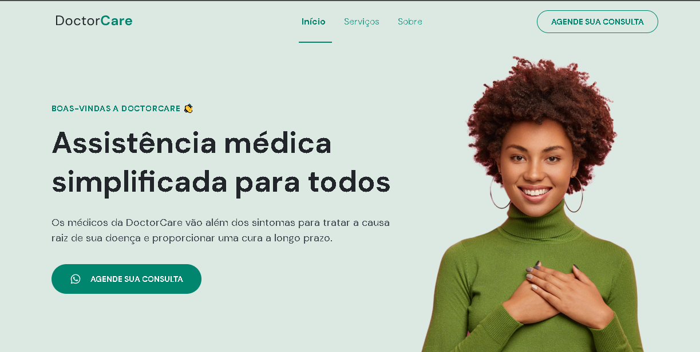
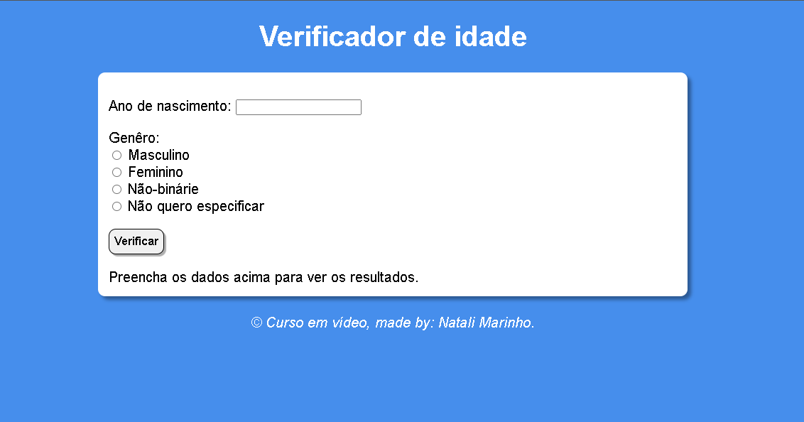
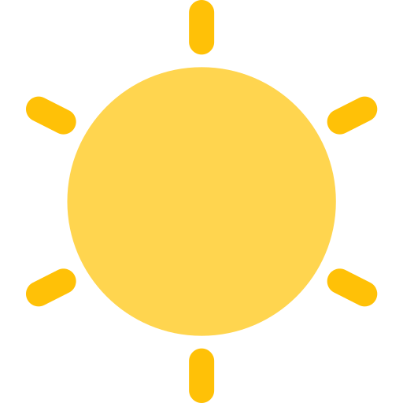
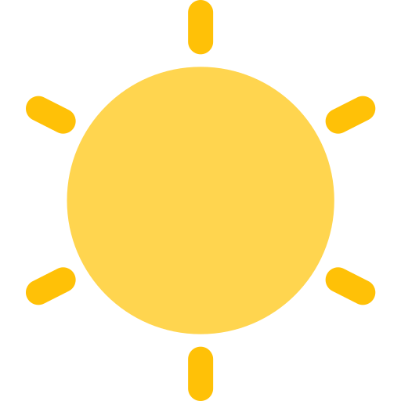

-  Projeto DoctorCare (NLW)
- Quem quer o sonosplasta?
- Projeto landing page (#7DaysOfCode)
- Projeto landing page da FlexTurismos (Digital Innovation One)
-
 Projeto lâmpada acesa
Projeto lâmpada acesa
- Mentalista (imersão dev)
- Projeto de formulário
-  Projeto verificador de idade (curso em vídeo)
- Calculadora IMC
- Projeto calculadora de média
- Projeto rate page
- Conversor de moedas (imersão dev)
Projetos
 
